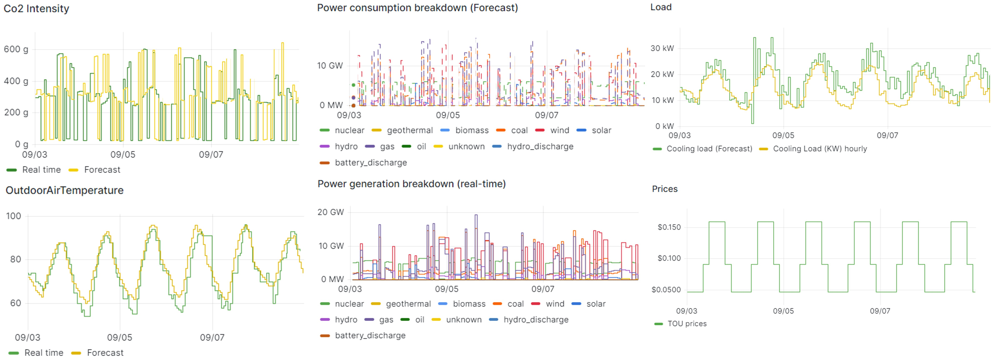

Grid Signals
Code & Installation Instructions
The Grid Signals agent (also referred to as the Grid Information agent) generates and publishes grid service signals that the Scheduler and Real-Time Control Agent use to decide how to operate the storage system. It currently produces:
- Price signals: time-of-use (TOU) price profiles, with helpers for ComEd and PJM market prices.
- CO₂ signals: carbon intensity and power generation breakdown, both real-time and as a 24-hour forecast, from the Electricity Maps API.
These signals, together with the outputs of the Forecaster Agent, are stored by the VOLTTRON historian and visualized in Grafana, as shown in Figure 1.

Behavior and published topics
On configuration the agent schedules its runs and publishes to topics derived from the configured campus:
| Signal | Trigger | Topic |
|---|---|---|
| TOU price (per hour) | run_dayahead_schedule |
devices/<campus>/grid_information/price/all (point tou, cents) |
| 24-hour CO₂ forecast | run_dayahead_schedule |
record/<campus>/grid_information/co2/forecast/{carbonIntensity,powerConsumptionBreakdown} |
| Real-time CO₂ | run_realtime_schedule (if enabled) |
record/<campus>/grid_information/co2/real_time/{carbonIntensity,powerConsumptionBreakdown} |
The price run builds a 24-hour profile, rotates it so that it starts at the current hour, and publishes one message per upcoming hour. The CO₂ forecast run fetches the last 24 hours of Electricity Maps data and shifts the timestamps forward 24 hours as a naive forecast.
Configuration
The agent is configured through the VOLTTRON configuration store. Signal types are nested under
type_of_grid_service_signals, with a price block and/or a co2 block.
| Parameter | Description |
|---|---|
campus |
Campus identifier used to build the publish topics. |
run_dayahead_schedule |
Cron expression for the day-ahead run (price profile and 24-hour CO₂ forecast). |
run_realtime_schedule |
Cron expression for the real-time CO₂ run (only used when co2.real-time is true). |
Price block
| Parameter | Description |
|---|---|
type_of_price_signal |
Currently TOU. |
type_of_tou_pricing |
TOU variant, e.g. standard. |
TOU_pricing.interval |
Hour ranges per tier (off-peak, mid-peak, on-peak), as [start, end) pairs. |
TOU_pricing.pricing |
Price ($/kWh) for each tier. |
CO₂ block
| Parameter | Description |
|---|---|
real-time |
If true, also publishes real-time CO₂ on run_realtime_schedule. |
method |
API. |
API_information.API_key |
Electricity Maps API token. Keep it out of version control. |
API_information.zone |
Electricity Maps zone id (e.g. US-NW-PACW). |
Example
{
"campus": "PNNL",
"run_dayahead_schedule": "0 0 * * *",
"run_realtime_schedule": "0 * * * *",
"type_of_grid_service_signals": {
"price": {
"type_of_price_signal": "TOU",
"type_of_tou_pricing": "standard",
"TOU_pricing": {
"interval": {"off-peak": [[0, 7], [21, 23]], "mid-peak": [[7, 10], [18, 21]], "on-peak": [[10, 18]]},
"pricing": {"off-peak": 0.04675, "mid-peak": 0.09083, "on-peak": 0.15925}
}
},
"co2": {
"real-time": true,
"method": "API",
"API_information": {"API_key": "<your_electricity_maps_api_key>", "zone": "US-NW-PACW"}
}
}
}
Requirements
- Python >= 3.10
- VOLTTRON >= 10.0
pandas,numpy,python-dateutil,requests
Installation
Before installing, VOLTTRON should be installed and running with its virtual environment active.
git clone https://github.com/der-control-modules/grid-signals
vctl install ./grid-signals --tag grid-signals --start